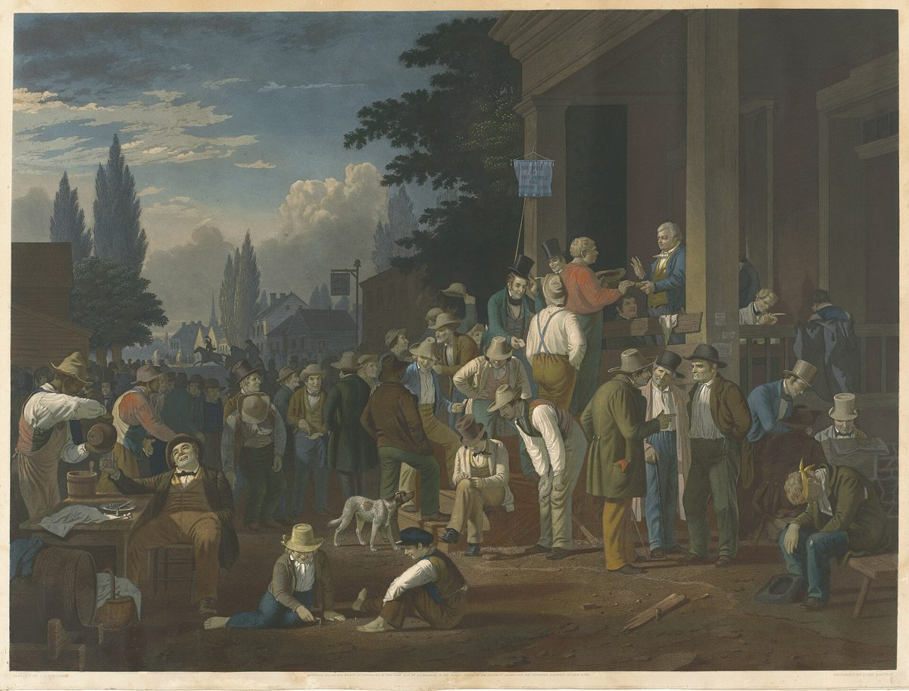

How US Elections Work: from the Primaries to the Midterms

Introduction
Why this sequence? American elections look complicated: primaries, conventions, electors, swing states, and now the midterms of 3 November 2026. This sequence explains them step by step, with numbers, diagrams and a lot of drawings from the period, from the cartoonist Thomas Nast to the magazine Puck.
Levels. Bac pro, B1, with a guided entry level for students who need more support, and a stretch level (B1+) for the others.
Links with other subjects. Moral and civic education (EMC), whose yearly theme in terminale professionnelle is taking part and debating in a democracy, mathematics (majorities, totals, percentages), history (the American Revolution and the Constitution).
Organisation. Nine lessons. Each one opens with a marked recap and ends with homework. Every lesson has a word grid, a key document, a diagram, an exercise, several vocabulary exercises (matching, word families, definitions, odd one out, picture labelling), a grammar lesson led by the teacher at the board (teacher script, board to copy, quick check), then exercises in four stages (the passive voice in lessons one to four, the conditional in lessons five to seven, a review in lesson eight, with tenses, linking words, prepositions and word order along the way), a figure of speech, a written and an oral expression task, a Going further section (B2 towards C1: collocations, finer grammar, translation, text analysis, an argued task), a gap-fill worksheet, answer keys hidden until you click, and a link with the world of work. Final task (lesson eight): explain US elections to a French colleague, orally or on a poster, with an assessment grid. Lesson nine, after the vote: the results, found by the students. An adapted version for dyslexic students follows the same lessons.
Real facts only. All figures come from official or neutral sources (USAGov, National Archives, house.gov, the Clerk of the House), checked on 2 November 2026. After the vote, in lesson nine, students find and enter the results themselves on reliable websites (AP, Reuters, CNN, BBC, NBC, CBS, ABC, The New York Times, house.gov, senate.gov): the sequence deliberately gives no result figures.
Overview
| Lesson | Key question | Drawings |
|---|---|---|
| 1. Who votes? Who governs? | Who can vote in the United States, and who does what in Washington? | Alfred R. Waud, Henry (Hy) Mayer |
| 2. Two parties, two animals | Why is there a donkey and an elephant in American politics? | Thomas Nast, Thomas Nast |
| 3. The road to the White House: primaries and conventions | How does a person become a candidate for president? | Unknown artist, Unknown artist |
| 4. Election Day and the Electoral College | Do Americans elect their president directly? | John Sartain after George Caleb Bingham |
| 5. Swing states: where the election is won | Why do candidates visit some states again and again? | Thomas Nast |
| 6. Congress: the House and the Senate | Who makes the laws, and how are they elected? | Unknown artist, Joseph Keppler |
| 7. The midterms of 3 November 2026: what is at stake? | Why are the midterms important, even without a presidential election? | Attributed to Elkanah Tisdale |
| 8. Final task: explain US elections to a French colleague | Can you explain clearly how Americans vote? | your own poster |
| 9. The results of the 3 November 2026 midterms | Who won the midterms of 3 November 2026, and what does it change for the president? | your own results table, from reliable websites |
Lessons
Lesson 1Who votes? Who governs?Lesson 2
Two parties, two animalsLesson 3
The road to the White House: primaries and conventionsLesson 4
Election Day and the Electoral CollegeLesson 5
Swing states: where the election is wonLesson 6
Congress: the House and the SenateLesson 7
The midterms of 3 November 2026: what is at stake?Lesson 8
Final task: explain US elections to a French colleagueLesson 9
The results of the 3 November 2026 midtermsAssessment out of twenty, with its answer keyLevels: entry, core, stretch, oralChecked sources and image referencesAdapted version (dyslexia)